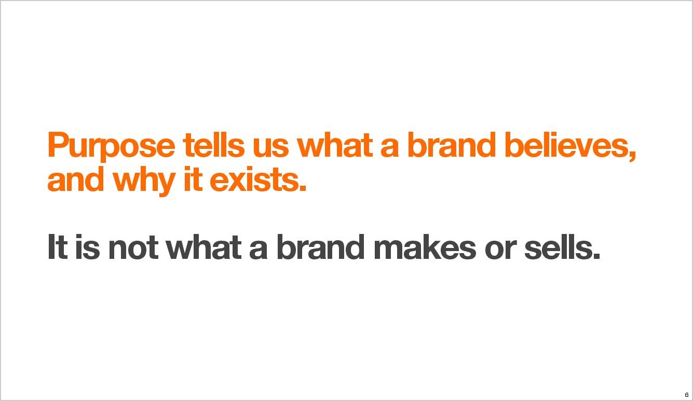

I started my career as a brand strategist at one of the biggest ad agencies in the world. I translated all kinds of consumer research into communications and designs for Fortune 500 companies like Esurance, Sprint and MillerCoors. I learned a ton at Burnett: from managing the client/agency relationship to leading stakeholder interviews to developing a winning challenger strategy for a major brand. I also started learning to code on weeknights and weekends before making a leap of faith to become a professional developer.